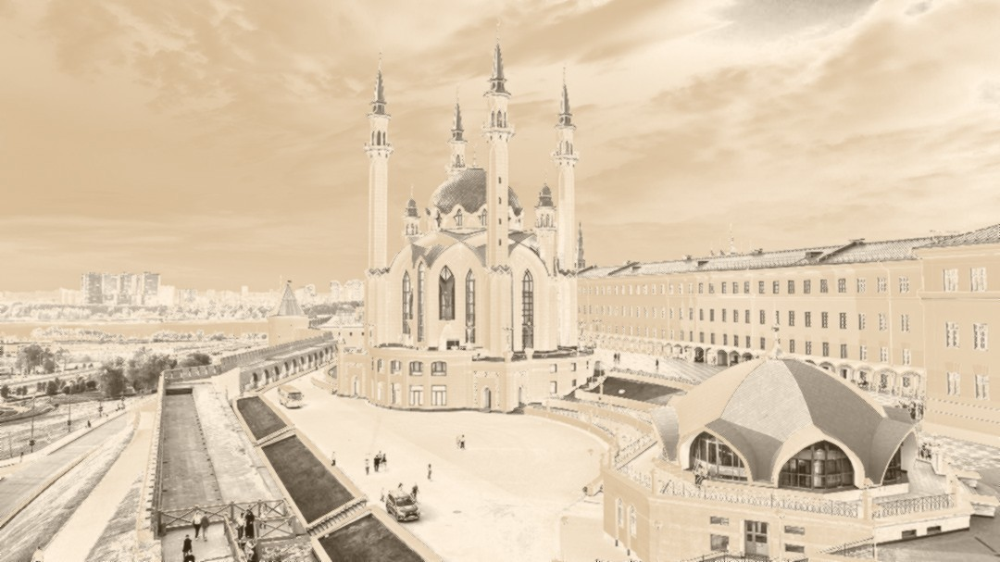
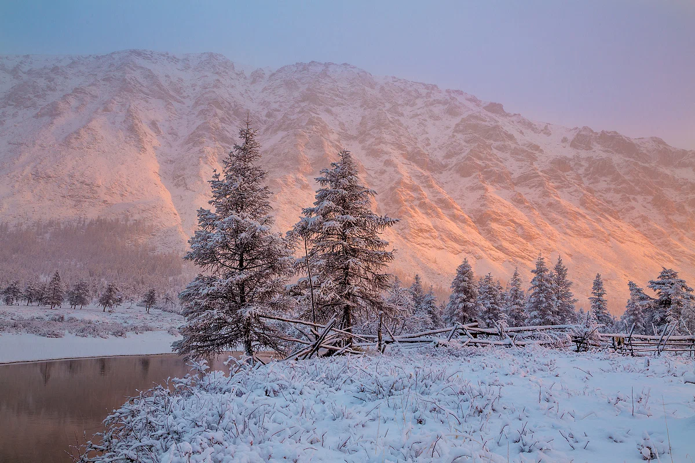
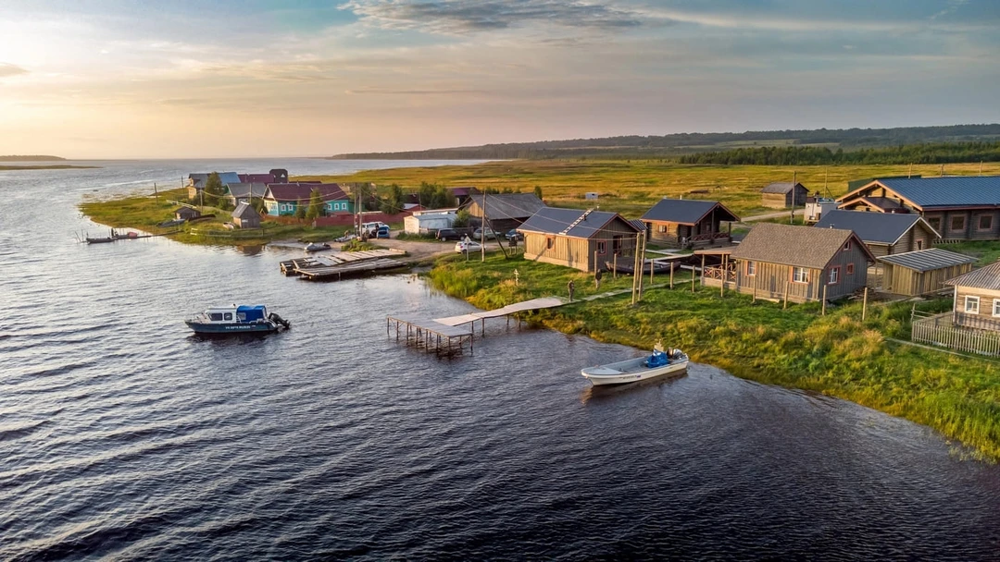
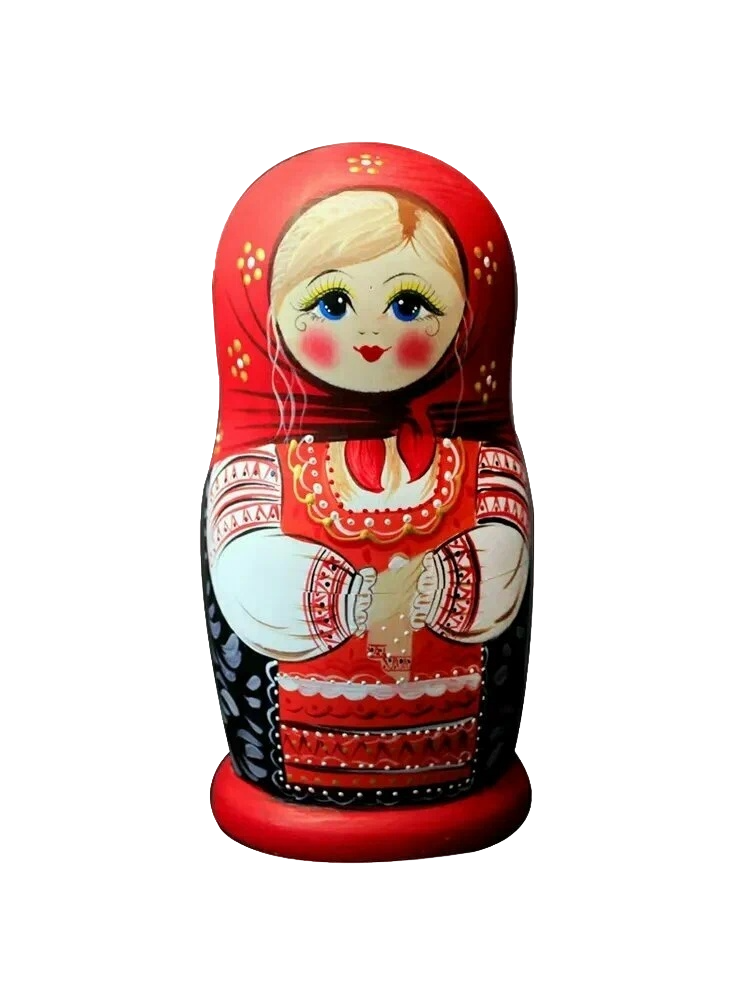

История оставляет след.
Открой её код.
Интерактивное погружение в мифологию, орнаменты и сакральное искусство народов России и мира: от древних легенд до реальных визитов в главные музеи страны.

Город сквозь столетия
Перекрёсток цивилизаций Востока и Запада, великое наследие Волжской Булгарии, виртуозная кожаная мозаика и поэзия древнего урмана.
«Исәнмесез! Рәхим итегез!»




Интерактивный Этноатлас
Исследуйте карту регионов. Каждый маркер открывает доступ к сакральным памятникам, мифам и живым традициям коренных народов.
Витрина наград и артефактов
Семейная экспедиция
Антология преданий и эпоса
Собрание сказов, былин и космогонических мифов, записанных выдающимися этнографами в экспедициях XIX–XX веков.

Дровосек и Шурале
Классическая поэма Габдуллы Тукая о противостоянии смекалистого дровосека и лесного духа.

Ворон Кутх и сотворение Земли
Древние сказания ительменов о великом пернатом демиурге, поднявшем сопки из океана.

Птица счастья Студёного моря
Сказы Бориса Шергина о поморских кормщиках, щепных птицах и солярных огненных конях.

Песнь сказителя-кайчы
Горловое пение «кай», двухструнный топшуур и легенды о незримых хранителях священной Белухи.
ИИ-Мастерская оберегов
Скомбинируйте традиционные сакральные мотивы народов России для создания уникального цифрового оберега и персональной открытки.
Оберег: Казанский тюльпан и Мезенский конь
Символизирует весеннее обновление рода, защиту домашнего очага и несокрушимую выдержку в дальних дорогах.